A ceiling fan, a snowflake and a road sign each look the same after certain turns. Today we count those turns, and learn to turn any shape about any point.
By the end you’ll know…
A rotation is fully defined by a centre, an angle and a direction.
Every point stays the same distance from the centre as it turns.
Clockwise and anticlockwise turns of the same angle give different images, except for 180 degrees.
A line of symmetry divides a shape into two mirror halves.
The order of rotational symmetry is how many times a shape looks identical during one full turn, and is always at least 1.
By the end you can
G4Identify lines of symmetry and the order of rotational symmetry of a shape.
G4Rotate a shape about a given centre through 90, 180 or 270 degrees, clockwise or anticlockwise.
Work down the page at your own pace. Write every answer in your book first, then click to check it.
01
Do Now
About 5 minutes
1
How many lines of symmetry does a square have?
4
2
What angle is a quarter turn, and what is a three-quarter turn?
90° and 270°
Remember these?
LAST LESSONReflect (2, 5) in the line y = x.
(5, 2)
LAST WEEKThe mean of 5 numbers is 8. A sixth number, 2, is added. Find the new mean.
40 + 2 = 42 42 ÷ 6 = 7
LAST TERMIs 50 a term of the sequence 3n + 2?
3n + 2 = 50 3n = 48 n = 16, a whole number, so yes.
LAST YEARWrite the equation of the vertical line through (-2, 5).
x = -2
02
Learn
Read each card, then follow the worked examples one step at a time.
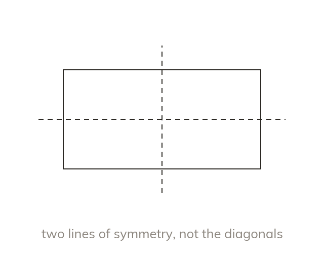
Lines of symmetry
A line of symmetry splits a shape into two mirror halves. A rectangle has two, through the middles of its sides. Its diagonals are not lines of symmetry.
A line of symmetry splits a shape into two mirror halves. A rectangle has two, through the middles of its sides; its diagonals are not lines of symmetry.
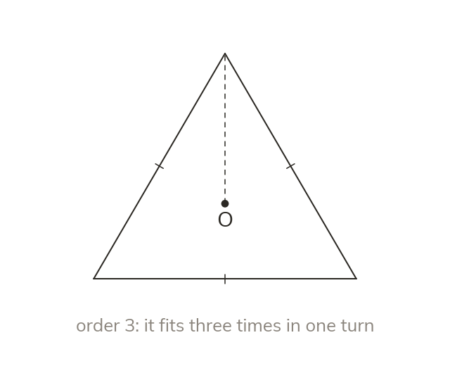
The order of rotational symmetry
The order is how many times a shape fits itself in one full turn. Every shape fits once at the full turn. So the order is never less than 1.
The order is how many times a shape looks exactly the same during one full turn. Every shape fits at least once, at the full turn, so the order is never less than 1.
WORKED EXAMPLE A
How many lines of symmetry does this trapezium have?
Testa vertical line through the middles of the parallel sides folds it onto itself
Diagonalsfolding along one does not match the halves
Answer1 line of symmetry
WORKED EXAMPLE B
What is the order of rotational symmetry of this parallelogram?
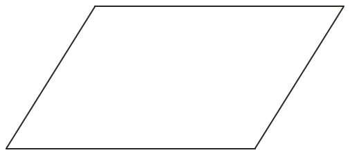
Half turnit fits onto itself
Quarter turnsit does not
Answerorder 2, with no lines of symmetry
YOUR TURN · a
A regular pentagon: how many lines of symmetry, and what order of rotational symmetry?
5 lines; order 5.
YOUR TURN · b
A kite: how many lines of symmetry, and what order of rotational symmetry?
1 line; order 1.
03
Check your understanding
Pick an answer. If it's wrong, the feedback tells you which mistake it was.
A shape only looks the same at the end of a full turn. What is its order of rotational symmetry?
Not quite. Every shape fits itself at least once, after a full turn: order 1.
Yes. Only the full turn fits, so the order is 1.
Not quite. The start and the full turn are the same position. Count it once: 1.
Not quite.360 is the angle. The order counts how many times it fits: 1.
How many lines of symmetry does a rhombus that is not a square have?
Not quite. Lines through the middles of the sides don't work for this rhombus. Just the 2 diagonals.
Not quite. Both diagonals are lines of symmetry: 2.
Yes. A rhombus folds onto itself along both diagonals: 2 lines.
Not quite. Fold along a diagonal and both halves match. There are two lines.
What is the order of rotational symmetry of a square?
Yes. A square fits itself 4 times in a full turn.
Not quite. The start and the full turn are the same position. Count 4.
Not quite. A square fits itself every quarter turn: order 4.
Not quite. Lines of symmetry are separate. Count only the turns: 4.
04
Practise
mark as you go
Checkpoint. Give the number of lines of symmetry and the order of rotational symmetry of a regular hexagon and of an isosceles triangle.Show your teacher before you go on
1
How many lines of symmetry does a rectangle have? What is its order of rotational symmetry?
2 lines of symmetry Order 2
2
How many lines of symmetry does a regular octagon have? What is its order of rotational symmetry?
8 lines of symmetry Order 8
3
How many lines of symmetry does a rhombus have? What is its order of rotational symmetry?
2 lines: its diagonals Order 2
4
How many lines of symmetry does an equilateral triangle have? What is its order of rotational symmetry?
3 lines of symmetry Order 3
5
Give the number of lines of symmetry and the order of rotational symmetry of (a) the letter H (b) the letter S.
(a) 2 lines; order 2 (b) No lines; order 2
EXT
A regular polygon has rotational symmetry of order 9. How many lines of symmetry does it have? Through what angle does it turn each time it fits?
A regular 9-sided polygon: 9 lines 360 ÷ 9 = 40°
05
Learn
Read each card, then follow the worked examples one step at a time.
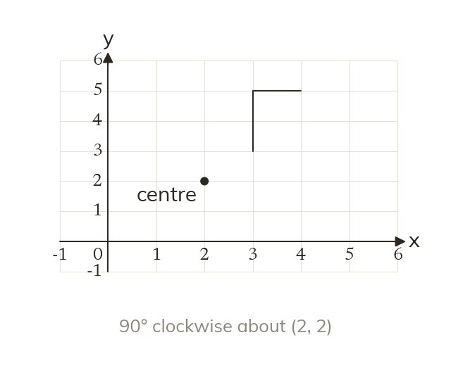
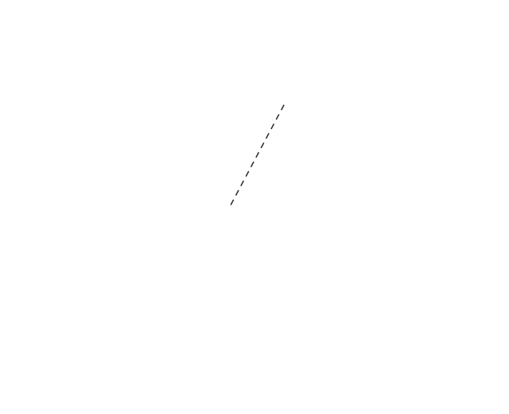
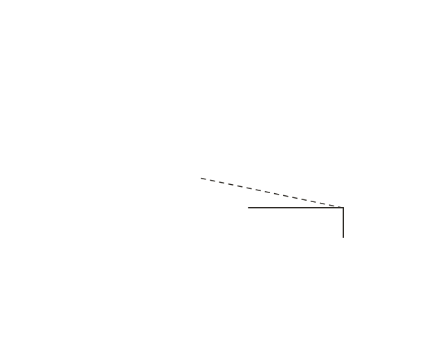
Centre, angle and direction
A rotation is fixed by a centre, an angle and a direction. Every point keeps its distance from the centre as it turns.
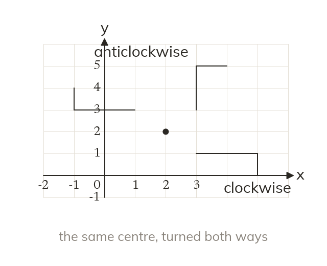
Clockwise is not anticlockwise
Turning the same angle clockwise and anticlockwise gives two different images. Only a half turn, 180°, lands in the same place both ways.
WORKED EXAMPLE C
Rotate the flag 90° clockwise about (1, 1).
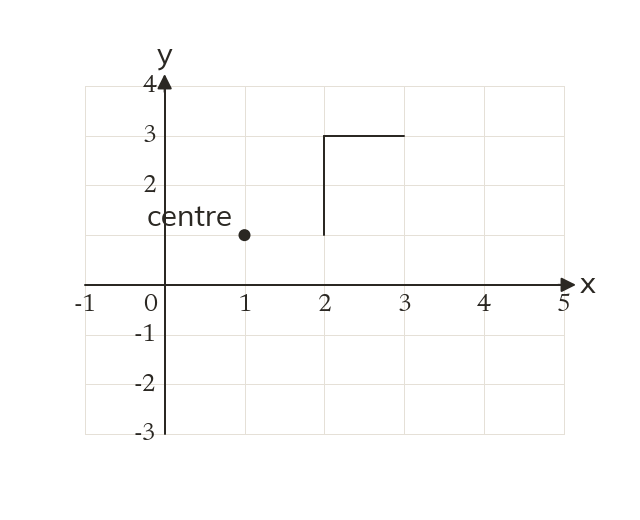
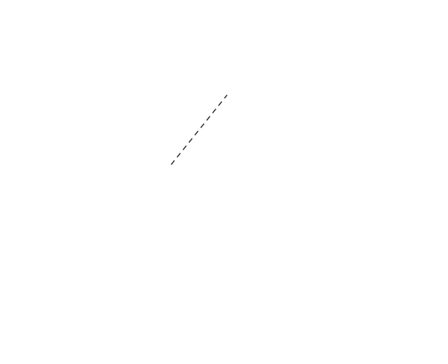
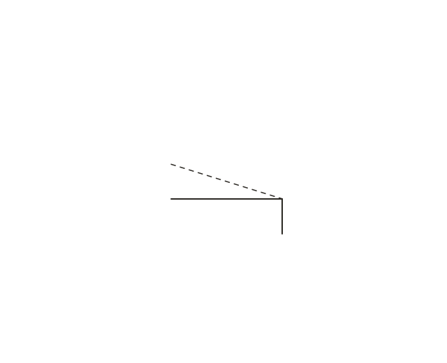
Tracethe flag, with the tracing pinned at (1, 1)
Turna quarter turn clockwise, so up becomes right
Imagefoot (1, 0), top (3, 0), bar end (3, -1)
WORKED EXAMPLE D
Rotate the flag 180° about (0, 0).
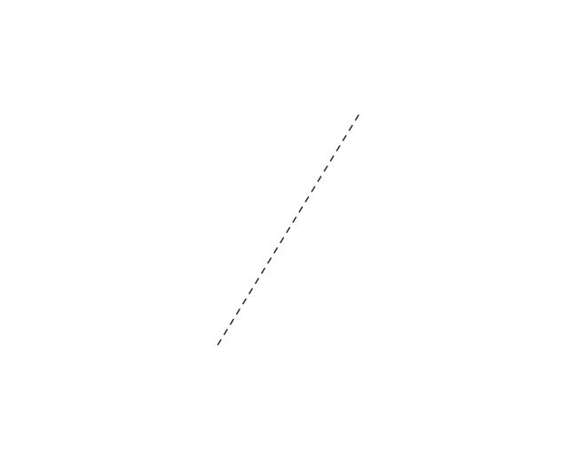
Directionnone needed, as a half turn lands in the same place either way
Pointseach (x, y) goes to (-x, -y)
Imagefoot (-1, -1), top (-1, -3), bar end (-2, -3)
YOUR TURN · c
Rotate the point (4, 1) through 90° anticlockwise about (0, 0).
(-1, 4)
YOUR TURN · d
Rotate the point (3, 2) through 180° about (1, 1).
(-1, 0)
06
Check your understanding
Pick an answer. If it's wrong, the feedback tells you which mistake it was.
Rotate (2, 0) through 90° clockwise about (0, 0).
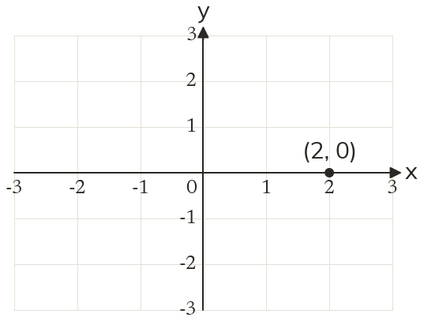
Not quite. That's anticlockwise. Clockwise takes (2, 0) down to (0, −2).
Not quite. That's a half turn. A quarter turn clockwise gives (0, −2).
Yes. A quarter turn clockwise moves (2, 0) down to (0, −2).
Not quite. Turn the point about (0, 0). Don't slide it.
Which describes a rotation fully?
Not quite. Give the centre too, like (1, 2).
Yes. Centre, angle and direction: all three are given.
Not quite. Give the angle too, like 90°.
Not quite. Give the centre as coordinates, and say which direction.
When do clockwise and anticlockwise turns give the same image?
Not quite.90° each way gives different images. Only 180° matches.
Not quite. Direction matters for most turns. Only 180° gives the same image.
Yes. Half a turn either way ends in the same place.
Not quite. For 180°, both directions end in the same place.
07
Practise
mark as you go
Checkpoint. Rotate the triangle with vertices (1, 1), (3, 1) and (1, 2) through 90° anticlockwise about (0, 0).Show your teacher before you go on